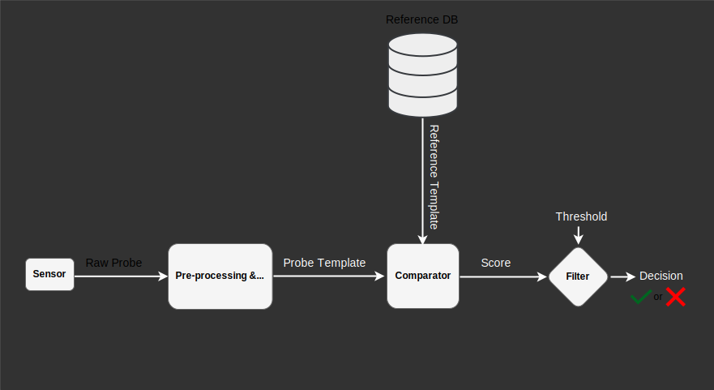

Privacy Concerns and Security Threats Surrounding Biometrics Systems
IJCB Tutorial
September 15, 2024
Deep learning improves biometric recognition
However, it introduces new challenges
Privacy and Security in the context of biometric recognition


There is no privacy without security
What are the privacy and security risks in the adoption of DL?

Can you identify Potential Attack Points in Biometrics Systems?

This Tutorial focuses on those Biometrics Systems Attacks
From Template inversion attack to Replay and Presentation attack
Template inversion attack on High resolution image

Template inversion attack on low resolution images
Template inversion attack enables Presentation attack

Presentation attack via digital replay and printed photograph

Performance of GaFar+GC on ArcFace-trained FR systems
Template recovery attack and its consequences
Scenario 1: One-to-one Template recovery Attack
Scenario 2: One-to-many Template recovery Attack
What can SP learn from leaked comparison scores?
Template Recovery reduced to a simple optimization problem
- Optimization Problem
- Given $k$ fake templates $\{f_i\}_{i\in [1,k]}$, that are normalized $d$-dim vectors sampled at random, and their corresponding scores $s_i$ w.r.t. the same target $T$, find the recovered template $\hat{T}$ such that $\hat{T}^{^{\intercal}} \cdot \hat{T} = 1$.
- $\hat{T}$ is recovered from the following minimization $$\underset{\hat{T}^{^{\intercal}} \cdot \hat{T} = 1}{\operatorname{min}} \hat{T}^{^{\intercal}} \cdot F - S$$
- Solution
- Using the Lagrange multiplier $\lambda$ and forming the Lagrangian function $$ \mathcal{L}(\hat{T},\lambda) = \sum_{i = 1}^{k} ( \hat{T}^{^{\intercal}} \cdot F_{i}-s_{i})^{2} +\lambda (\hat{T}^{^{\intercal}} \cdot \hat{T} - 1) $$
- After a partial derivation of $\frac{\partial \mathcal{L}}{\partial \hat{T}}$, solve the following equation $$ \left[ FF^{^{\intercal}}+ \lambda \mathit{I}_{d} \right] \cdot \hat{T} - F \cdot S = 0 $$
Evaluation of the score distribution using recovered Templates
- Score distribution of original-original pairs vs. original-recovered pairs
Evaluation of Attack Success Rate
Stricter thresholds lead to lower attack success rates.
How much knowledge does an attacker need for a successful bypass?
An attacker needs only between $75$ to $177$ fake templates to recover a $512$-dim target vector.
Evaluation of Image Reconstruction of the recovered templates
- Using synthetic feature vectors extracted from the SFace dataset
Takeaways of this part
- Cost-effective attacks
- Drastic privacy and security implications
- Lack of privacy and security controls leads to biometric leakage
- Mitigation of template inversion attack and template recovery
- Protection of templates and scores